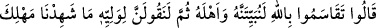
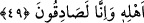
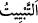
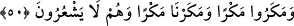
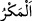

49. Allah’a and içerek birbirlerine şöyle dediler: Gece ona ve âilesine baskın
yapalım (hepsini öldürelim); sonra da velisine: “Biz (Sâlih) âilesinin yok edilişi
sırasında orada değildik, inanın ki doğru söylüyoruz.” diyelim.
Bu
âyette
onların
yaptıkları
bozgunculuklardan
bazısının
açıklanmasına
başlanmaktadır.
“Allah’a and içerek” yemin ederek “birbirlerine şöyle dediler:” Yâni bu
bozguncular, Sâlih (a.s.)’ın durumunu istişâre ederken birbirlerine şöyle dediler:
Bu, Sâlih (a.s.)’ın onları deveyi öldürdükleri takdirde ilâhî azâbla uyarmasından ve
bunun alâmetinin de onların renklerinin değişmesi olduğunu açıklamasından sonra
olmuştur. Nitekim Sâlih (a.s.) onlara “Yurdunuzda üç gün daha yaşayın (sonra helâk
olacaksınız)!” (Hûd, 11/65) demiştir.
“Gece ona ve âilesine baskın yapalım (hepsini öldürelim);” Gece ansızın Sâlih’in
yanına varalım, onu ve âilesini öldürelim.
et-Tâc’da der ki: “
” düşmana âniden gece baskını düzenlemek ve onu imhâ
etmektir.”
“Sonra da velisine:” Sâlih’in kan dâvâsında velisine “Eğer bize Salih’i kim öldürdü
diye sorulacak olursa, deriz ki:” “Biz (Sâlih) âilesinin yok edilişi sırasında orada
değildik,” onu öldürmeyi üstlenmek şöyle dursun, onların öldürülmesinde,
öldürüldükleri vakitte veya öldürüldükleri mekânda hazır değildik.
“İnanın ki doğru söylüyoruz” doğrusu biz doğru sözlüleriz “diyelim.”
Bu tıpkı Yûsuf (a.s.)’ın kardeşlerinin Yakub (a.s.)’a “Fakat biz doğru söyleyenler
olsak da sen bize inanmazsın.” (Yûsuf, 12/17) demelerine benzer.
50. Onlar böyle bir tuzak kurdular. Biz de kendileri farkında olmadan, onların
planlarını altüst ettik.
“Onlar böyle bir tuzak kurdular.” “
” başkasını ona yapmak istediği hileye
yöneltmektir. “Biz de kendileri” bunun “farkında olmadan, onların planlarını altüst
ettik.” Yâni kurdukları bu tuzağı onların helâk edilmesinin sebeb kıldık.
Kim kötülük tohumu ekip de iyilik umarsa
Boşuna heveslenmiş, boş hayallere kapılmıştır